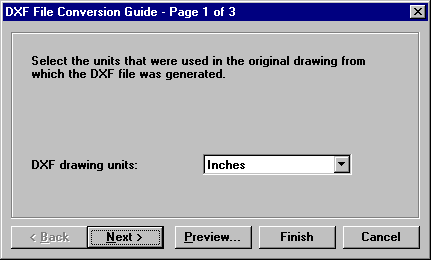
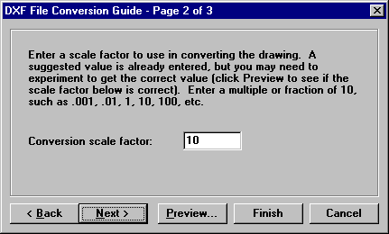
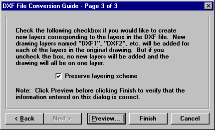

DXF Conversion Guide |
  
|
DXF Conversion Guide |
|
The DXF File Conversion Guide is displayed after you click the menu "File | Import | Into Drawing" and select a DXF file to import into the current drawing.



DXF drawing units: Select the units that were used in the original drawing from which the DXF file was created. This input defaults to Inches, but you can change it to any of the unit display types allowed in Drawing Board.
Conversion scale factor: Determines how the DXF file will be scaled when imported into the drawing. You may need to try a few different values before getting this number to the correct value, so first click the Preview button and see if the DXF file comes in at the correct scale. If not, you will need to change the number to something else, but always enter a value that is a multiple of 10, such as 10, 100, 1000, or a fraction of 10 such as 1, 0.1, 0.01, etc. The default value is usually 10 or 100.
Preserve layering scheme: When checked, the layer distinctions in the original drawing will be preserved, but the layer names that are added will be "DXF1," "DXF2," etc. If you leave the box unchecked, no new layers will be added.
Back button: Returns to the previous step in the conversion process.
Next button: Goes to the next step in the conversion process.
Preview button: Displays the Import DXF Preview window where you can see whether or not the DXF file will display correctly with the inputs on the DXF File Conversion Guide set to their current values.
Finish button: Performs the import of the DXF file. Be sure to click the Preview button first to see if you have all the inputs correct on this dialog.
Cancel button: Closes this dialog without making any changes.